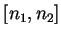
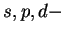

Next: Calculation of the DOS
Up: Detailed description of options
Previous: Detailed description of options
Contents
Main menu
When the compiled code is started, the first menu is shown that asks
you to choose the DFT code you are working with:
..................................................
Choose the input format:
1. open input as CASTEP
2. open input as CETEP / old CASTEP
3. open input as VASP
4. open input as SIESTA
5. QUIT
------>
Enter 3 for VASP and 4 for SIESTA.
If the former case, you will also be asked about the chemical species
in your CONTCAR-like file. Then, the main menu appears:
..................................................
Choose the problem to solve:
============== DOS options =======================
0. Choose dispersion for the DOS smearing
1. projected DOS calculations from psi2.DOS file
11. proj. DOS calculations from psi2.PRO/PROCAR
file
2. projected DOp calculations from psi2.DOp file
3. Total DOS: you need only -> band.out, brill.dat
============== DENSITY options ===================
4. partial density MAP from psi2.MAP
5. total/partial electron density, electrostatic
potential
55. spin density
6. manipulation with charge densities
7. z-dependence of partial charge densities
(in-plane integrated) for any band (state)
8. Transform the charge density for a shifted
system
============== ELECTR. potential options =========
9. Coulomb potential (point,line,plane)
10. Quit
------>
Not all the options are shown at the same time. Also, depending on
the code, The menu is split into three sections:
- electronic DOS (does not work for SIESTA yet; some
options work only for CASTEP):
- 0 - here it is possible to plot the total DOS for a number
of dispersions used for smearing; this is useful if it is not clear
beforehand what value to us; as other DOS related options (11
and 3) allow you to use only one dispersion, go here first
to find it;
- 3 - here you can preview and plot the total DOS; it is possible
to smear the DOS as well as to plot several curves with various ranges
of bands (states)

;
- 11 - this is similar to the previous one, but also allows
plotting the

projected (local) DOS alongside the total DOS;
- 1 - this is probably the same, but works only for CASTEP
[redandant?]
- 2 - similar to 11, but works with surface layers
rather than spheres (only for CASTEP)
- options related to the electron (spin) total (partial) densities;
in fact, any object written by a DFT code in the format of the density
(like the electrostatic potential produced by VASP,
see Section 4) can also be processed here
- 4 - here, the partial electron density, Eq. (3.2), can
be processed; works only for CASTEP
- 5 - a more powerful option, works for any files in the proper
format corresponding to the activated DFT code; could be a partial
or total density or an electrostatic potential, etc.
- 55 - the same as 5, but works particularly for the
spin density (appears only for spin-polarised calculations)
- 6 - a linear combination of two densities can be calculated,
works for old CASTEP, VASP and SIESTA
- 7 - for the partial
 -densities defined on layers (integrated
over
-densities defined on layers (integrated
over  ,
,  in the surface plane), Eq. (3.3);
implemented only for CASTEP
in the surface plane), Eq. (3.3);
implemented only for CASTEP
- 9 - electrostatic potential of the lattice at a point, along
a line or within a plane; in all cases works with point charges; however,
can calculate the potential from actual wavefunctions in the case
of the old CASTEP/CETEP
Next: Calculation of the DOS
Up: Detailed description of options
Previous: Detailed description of options
Contents
Lev Kantorovich
2006-05-08